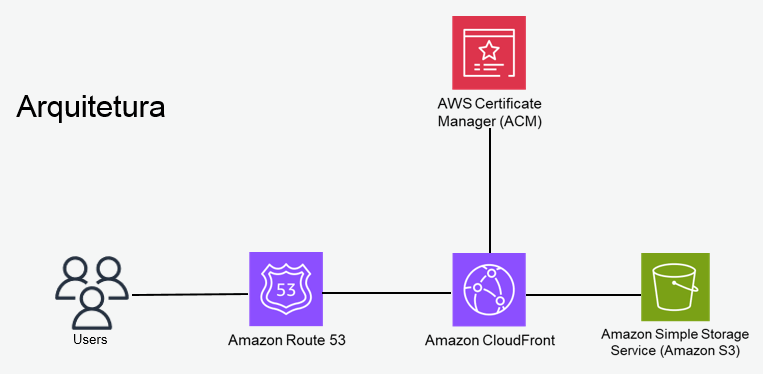
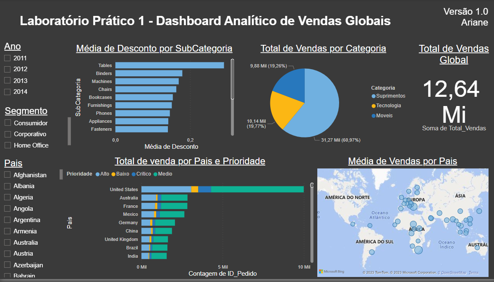

Desenvolvedor de Cloud
Desenvolvimento de um website implantação de um ou mais serviços na nuvem AWS, com rede de entrega de conteúdo, com baixa latência, com segurança, e armazenamento durável, para atender a demanda de 11 milhões de requisições¹ por mês.
Desenvolvi um dashboard no Power BI para analisar os dados de vendas. Nosso objetivo era responder a diversas perguntas e fornecer uma visão abrangente das atividades de vendas. Abaixo estão algumas das principais informações do dashboard:
